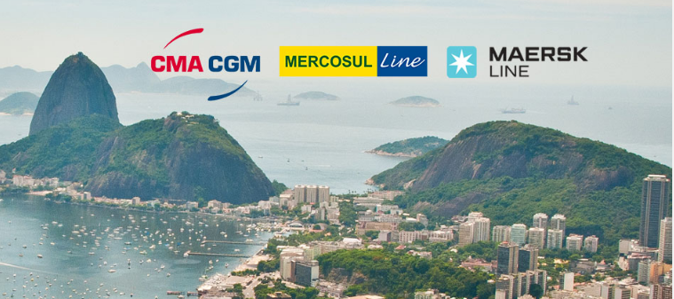

返回首页
CMA CGM to acquire MERCOSUL from Maersk Line

CMA CGM to acquire MERCOSUL from Maersk Line
Tuesday, June 13, 2017
CMA CGM and Maersk Line have announced today that they have entered into a binding agreement whereby CMA CGM would acquire Mercosul Line, one of the leading players in Brazil's domestic container shipping market.
The acquisition of Mercosul Line would allow CMA CGM to strengthen its service offering to and South America, most notably in Brazil, a market with a strong potential for development, especially on cabotage and
"door-to-door" services. This activity is part of CMA CGM's core strategy, which is to develop intra-regional sea transportation links and complementary services such as logistics.
The Mercosul transaction is subject to Brazilian regulatory approval and the closing of Maersk's Hamburg Süd acquisition. At the earliest, the integration of Mercosul within CMA CGM will start at the same time as the Hamburg Süd integration, which is expected in Q4 2017. Until then, Mercosul Line will continue business as usual.
The transaction will ensure that the cabotage sector in Brazil remains competitive and that customers continue to benefit from a comprehensive choice of carriers.